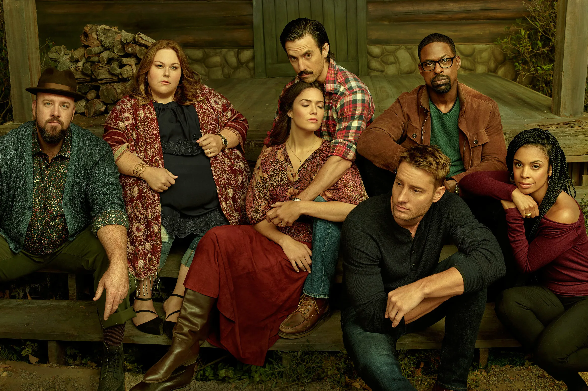

Serie
This Is Us

Cómo la imagen construye la emoción
Sinopsis
La fotografía y el diseño de producción como extensiones del guion: así This Is Us traduce el trauma en imagen.
This Is Us — T02 · E14
El episodio se caracteriza por utilizar contraste cromático, densidad atmosférica y un uso de planos que materialicen el trauma del pasado y el procesamiento del duelo en el presente, lo que permite establecer un puente entre tragedia y resiliencia.
En la narrativa audiovisual, el uso del color invierte los significados tradicionales asociados al ideal de hogar. La iluminación crea una atmósfera en tono de pesadilla mediante choques violentos de colores complementarios. Por un lado, los tonos fríos (azules profundos y morados pesados) dominan las zonas que deberían ser seguras (como lo es la casa) comunicando la indefensión de los personajes.
El frío de los colores se interrumpe bruscamente por la saturación de colores cálidos (amarillos, naranjas y rojos) propios del incendio. En el episodio, estos colores van a estar presentes en el presente para representar la calidez del hogar, pero en el momento del incendio se sobreexponen y se notan vibrantes, exacerbando lo invasivo, lo destructivo, lo amenazante.
Otro elemento visual de peso es el humo que llena varias imágenes, reduciendo la profundidad de campo y claramente creando barreras visuales. Esto además de crear tensión y claustrofobia en el espectador, funciona como representación de turbulencia emocional y una evidente falta de claridad.
Físicamente, el humo asfixia a los personajes, literalmente; y metafóricamente, es un tipo de asfixia la que cada uno de los miembros de la familia cargará durante los siguientes años. Los flashbacks a esta escena vuelven a la carga emocional.
Una vez más, el presente es más cálido y colorido, incluso tiene un ligero filtro anaranjado. Esto funciona como un eco visual del fuego, o de la domesticación del mismo. Definitivamente ya no es el rojo destructivo del incendio, pasa a ser un tono melancólico de la memoria de los miembros. Esta es la forma en la que Jack sigue presente en la vida de su familia.
En cuanto a cinematografía, en el incendio se ven planos más caóticos para mostrar la magnitud de la amenaza, en el presente hay más primeros planos. Al cerrar el encuadre sobre los rostros, nos obliga a centrarnos en las microexpresiones. En esto se exacerba la intimidad, provocando complicidad en el espectador en el proceso interno de duelo de cada uno de los hermanos.
El fuego no solo destruye la casa; redefine a la familia.
Fragmentos
Fichas técnicas
This Is Us
Conclusión
En el episodio en general, podemos ver un aprovechamiento de varias herramientas audiovisuales. La fotografía y el diseño de producción se vuelven extensiones del propio guion. El contraste entre el tono pesadillesco y la intimidad nostálgica del presente, encapsula perfectamente la idea de que el amor y el dolor están profundamente vinculados, y que el trauma del pasado puede seguir teniendo pulso e impacto en la realidad de nuestro presente.
Actividad anterior
Lenguaje cinematográfico y televisivo
Siguiente actividad
La Familia en el Espejo